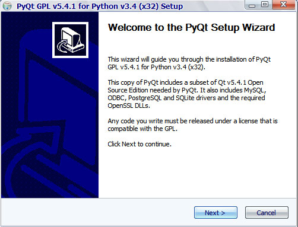
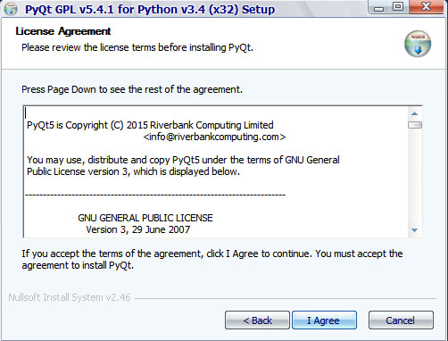
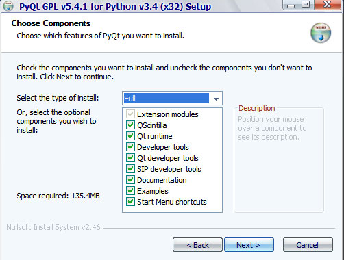
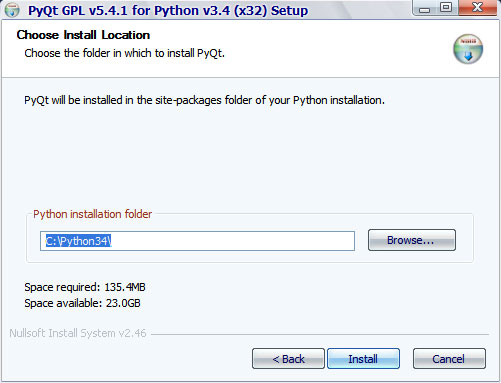
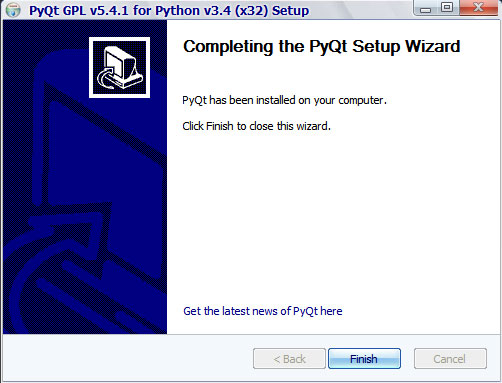

На этом шаге мы рассмотрим процесс установки библиотеки.
Библиотека PyQt5 не входит в комплект поставки Python, и прежде, чем начать изучение ее основ, необходимо установить эту библиотеку на компьютер. Итак:
- Заходим на страницу https://riverbankcomputing.com/software/pyqt/download5, загружаем исполняемый файл
PyQt5-5.4.1-gpl-Py3.4-Qt5.4.1-x32.exe для 32-разрядной версии Python (или PyQt5-5.4.1-gpl-Py3.4-Qt5.4.1-x64.exe -
для 64-разрядной) и запускаем его двойным щелчком.
Можно взять эти файлы здесь.
- Пользователям Windows Vista и более новых версий Windows следует положительно ответить
на появившееся на экране предупреждение системы UAC - в противном случае PyQt не будет установлена.
- В открывшемся окне (рисунок 1) нажимаем кнопку Next.

Рис.1. Установка PyQt. Шаг 1 - Далее (рисунок 2), нажав кнопку I Agree, принимаем лицензионное соглашение.

Рис.2. Установка PyQt. Шаг 2 - Теперь (рисунок 3) можно выбрать компоненты, которые следует установить, - оставляем здесь все как есть и
нажимаем кнопку Next.

Рис.3. Установка PyQt. Шаг 3 - На следующем шаге (рисунок 4) задается путь к каталогу, в котором расположен интерпретатор
Python (C:\Python34), - нажимаем здесь кнопку Install для запуска процесса установки PyQt.

Рис.4. Установка PyQt. Шаг 4 - После завершения установки будет выведено окно, изображенное на рисунке 5.

Рис.5. Установка PyQt. Шаг 5Нажимаем здесь кнопку Finish для выхода из программы установки.
В результате установки все необходимые файлы будут скопированы в папку C:\Python34\ Lib\site-packages\PyQt5, а путь к ней будет добавлен в начало системной переменной PATH. В указанной папке вы найдете программы Designer, Linguist и Assistant, а также библиотеки динамической компоновки (такие как QtCore5.dll, QtGui5.dll и Qt5Sql.dll), необходимые для нормального функционирования программ, написанных на PyQt.
Кроме этого, там же находится библиотека libmySQL.dll, предназначенная для доступа к базам данных MySQL. Здесь надо иметь в виду, что библиотека libmySQL.dll будет во всех программах всегда подгружаться именно из этой папки, поскольку путь к ней добавляется, как уже было отмечено, в самое начало переменной PATH. Если Вы занимаетесь Web-программированием и подключаетесь к MySQL из РНР версии 5.2, то у вас возможно возникновение проблемы, связанной с несоответствием версий библиотеки libmySQL.dll. В таком случае следует переместить путь к папке, куда была установлена PyQt, например, в самый конец переменной PATH.
Чтобы проверить правильность установки, выведем версии PyQt и Qt.
>>> from PyQt5 import QtCore >>> QtCore.PYQT_VERSION_STR '5.4.1' >>> QtCore.QT_VERSION_STR '5.4.1'
На следующем шаге мы рассмотрим первую программу на PyQt5.